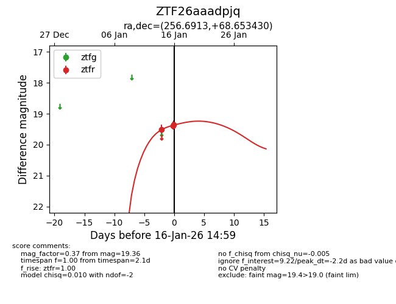
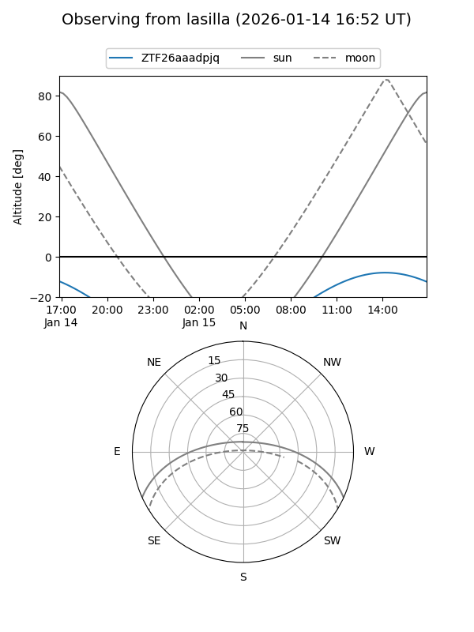

ZTF26aaadpjq
Target ZTF26aaadpjq at 2026-01-16 15:00
Aliases and brokers:
FINK: link
Lasair: link
ALeRCE: link
alt names
ZTF26aaadpjq (ztf,fink_ztf)
Coordinates:
equatorial (ra, dec) = 256.6913,+68.65343
equatorial (HMS+DMS) = 17:06:45.90,+68:39:12.35
galactic (l, b) = (99.5534,+34.58107)
Flags:
Photometry:
last ztfr=19.36
3 ztfr detections
Lightcurve

Visibility


Additional plots